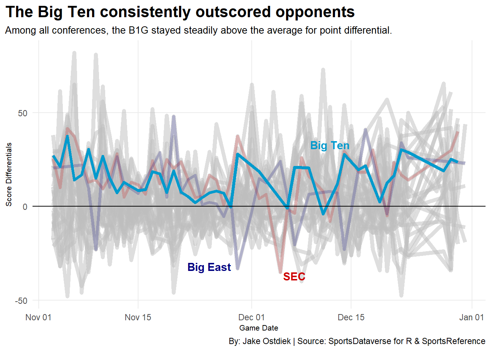

Code
library(tidyverse)
library(hoopR)
library(patchwork)
library(ggrepel)
# downloaded hoopR information to make it easier when running the code chunk over time
bball_data <- read_csv("data/ncaa_mbb.csv")
# get the conference data to join, data from sports reference
conference <- read_csv("data/teams_conferences.csv")
# select only what I need
conference <- conference |>
select(School, Conf, SOS)
# join bball with conference
bball_data <- bball_data |>
left_join(conference, by = c("team_location" = "School"))
# filter for non conference games
non_conf_bball <- bball_data |>
#filter for games before conference play since conference play differentials won't work
filter(game_date < as.Date("2026-01-01"))
# time for the actual first chart I have
chart1_data <- non_conf_bball |>
left_join(conference, by = c("opponent_team_location" = "School"), suffix = c("", "_opp")) |>
# filter to ensure only non conference games are considered
filter(Conf != Conf_opp | is.na(Conf_opp)) |>
mutate(
score_diff = team_score - opponent_team_score,
date_of_game = as.Date(game_date),
) |>
group_by(Conf, date_of_game) |>
summarize(
avg_score_diff = mean(score_diff, na.rm = TRUE),
.groups = "drop"
)
chart1_data_bigten <- chart1_data |>
filter(Conf == "Big Ten")
chart1_data_sec <- chart1_data |>
filter(Conf == "SEC")
chart1_data_bigeast <- chart1_data |>
filter(Conf == "Big East")
ggplot() +
geom_line(
data = chart1_data,
aes(x = date_of_game, y = avg_score_diff, group = Conf),
color = "grey",
alpha = 0.5,
linewidth = 2) +
geom_line(
data = chart1_data_sec,
aes(x = date_of_game, y = avg_score_diff, group = Conf),
color = "red3",
alpha = 0.2,
linewidth = 1.5) +
geom_line(
data = chart1_data_bigeast,
aes(x = date_of_game, y = avg_score_diff, group = Conf),
color = "navy",
alpha = 0.2,
linewidth = 1.5) +
geom_line(
data = chart1_data_bigten,
aes(x = date_of_game, y = avg_score_diff, group = Conf),
color = "deepskyblue3",
linewidth = 1.5) +
geom_hline(yintercept = 0, color = "black") +
annotate(
"text", x = as.Date("2025-12-12"), y = 33, label = "Big Ten", color = "deepskyblue3", fontface = "bold", size = 4
) +
annotate(
"text", x = as.Date("2025-12-07"), y = -37, label = "SEC", color = "red3", fontface = "bold", size = 4
) +
annotate(
"text", x = as.Date("2025-11-25"), y = -32, label = "Big East", color = "navy", fontface = "bold", size = 4
) +
theme_minimal() +
labs(
title = "The Big Ten consistently outscored opponents",
subtitle = "Among all conferences, the B1G stayed steadily above the average for point differential.",
x = "Game Date",
y = "Score Differentials",
caption = "By: Jake Ostdiek | Source: SportsDataverse for R & SportsReference"
) +
theme(
plot.title = element_text(size = 16, face = "bold"),
axis.title = element_text(size = 8),
plot.subtitle = element_text(size = 10),
panel.grid.minor = element_blank(),
plot.title.position = "plot"
)